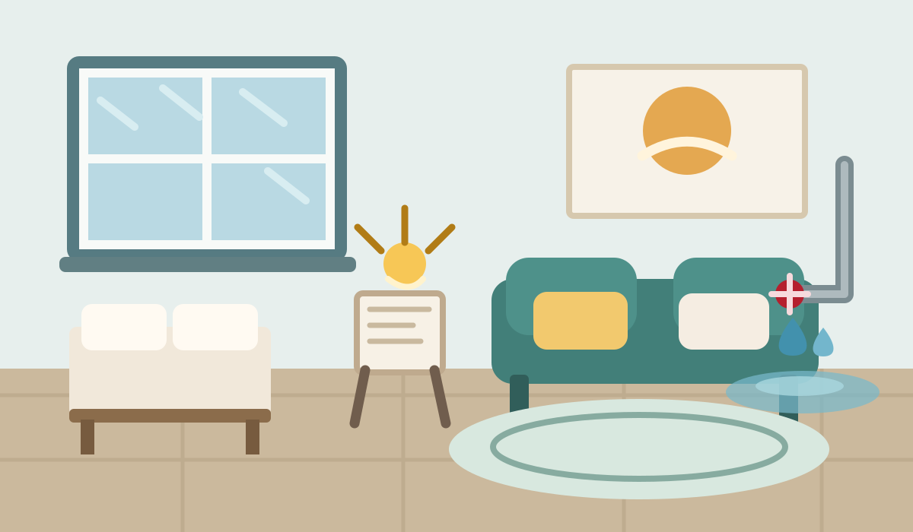

第 8 天 · 星期二
小家突发状况
真正的安心，是意外来时手里还有选择。
7
连续打卡

水管漏了，需要一笔以防万一的钱
今日剧情
约 3 分钟
水管突然爆了
维修师傅说至少要 300 元。你不必今天凑齐，但可以先为意外留下一小笔。
我的安全垫
先攒到 1 个月必要开支，就是很稳的一步。
仅更新本地演示数据，不调用支付或银行接口。
今天带走一句话
备用金不是闲钱，是生活的缓冲垫
先从 1 个月必要开支开始，再根据收入稳定性逐步增加。
我的小家
21天地图
每 7 天完成一幕，把看清、积累和守护连成一个闭环。
7已完成
只比坚持 不比金额
同路人小队
熟人之间只展示打卡天数和进度，不展示任何金额。
本周共同目标
4 人完成 20 次打卡
小队边界
无陌生人匹配、无公开广场、无私聊。退出小队后，其他成员不再看到你的进度。